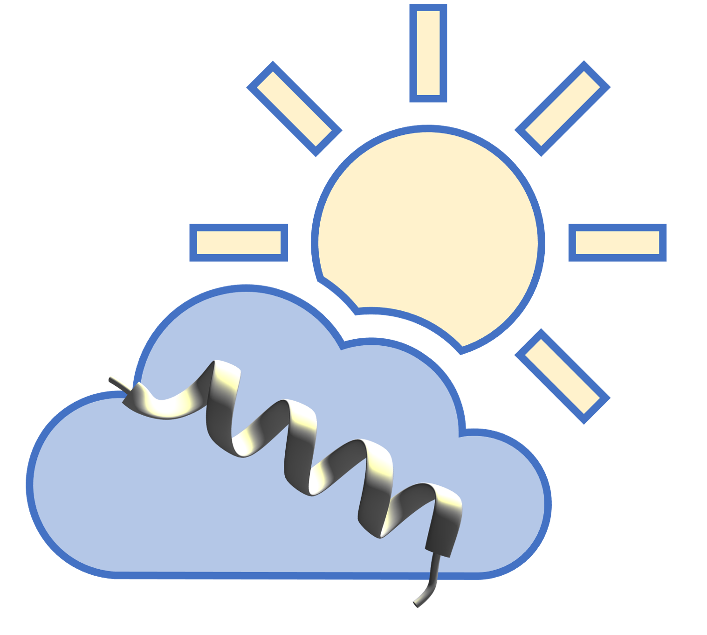

| Title | |
| Protein Name | |
| Organism | |
| Gene | |
| Length |
|  |
StrUctural aNnotation and visuaLIzaTion |
|
|
SUNLIT Protein Viewer Viewing Structure |
||
SUNLIT Protein Viewer: UniProt ID
| Title | |
| Protein Name | |
| Organism | |
| Gene | |
| Length |
PDB: PDB ID
| Title | |
| Method | |
| Resolution | |
| Range |
Unreviewed UniProt ID
|
The selected transcript maps to an unreviewed UniProt entry that may not have an associated structure. In this case, in seqr, you can click on the link associated with the consequence term (missense variant or inframe deletion or inframe insertion) which will open a popup window with all of the transcripts that include this variant. You can click on the structure viewer links associated with other transcripts that may map to a reviewed UniProt entry with associated structures. |